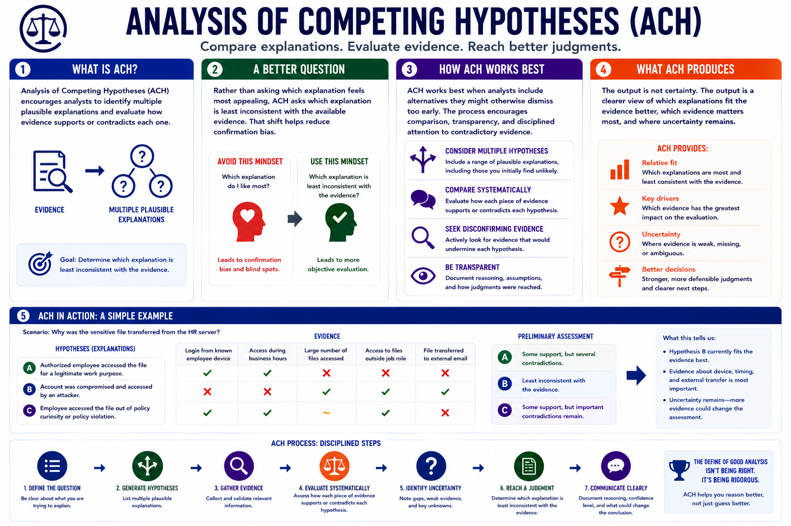

Structured Analytic Techniques
Analysis of Competing Hypotheses
Connecting to LMS... Progress: in progress
Version 1.0 | Date: 2026-06-16 | Educational overview of structured analytic techniques for judgment under uncertainty.

Narration
Analysis of Competing Hypotheses, often called ACH, encourages analysts to identify multiple plausible explanations and evaluate how evidence supports or contradicts each one.
Rather than asking which explanation feels most appealing, ACH asks which explanation is least inconsistent with the available evidence. That shift helps reduce confirmation bias.
ACH works best when analysts include alternatives they might otherwise dismiss too early. The process encourages comparison, transparency, and disciplined attention to contradictory evidence.
The output is not certainty. The output is a clearer view of which explanations fit the evidence better, which evidence matters most, and where uncertainty remains.